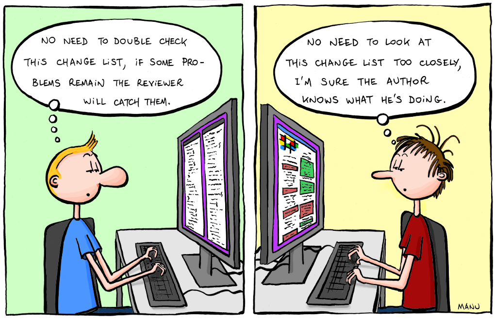

EuroPython 2017
Rimini, 9-16 July 2017
Where

Palacongressi di Rimini
How to create inspiring data visualizations?
How to create inspiring data visualizations?
- What (data), why (concept) and how (visual design & interactions).
- Users don't always know what they are looking for
- Story-telling with visualizations (martini glass model)
How to create inspiring data visualizations?
Poster sessions
Many people stopped by
Some asked questions
https://cds.cern.ch/record/2274794
Testing, Debugging & Reviewing
Security & Operations
Other
Other
- A faster Python? You Have These Choices (C extensions, Cython, CFFI, PyPy)
- Developing elegant workflows in Python code with Apache Airflow
- Writing Awesome PyPI packages in Python
Check the schedule at:
EuroPython website
and see the talks at:
EuroPython Conference YouTube channel